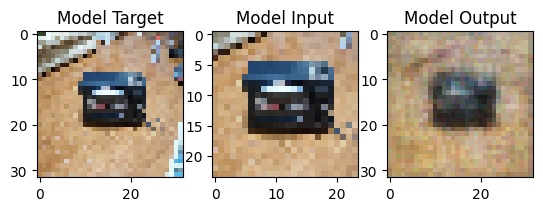

Data Science
Competitions
I participated in the Optiver - Trading at the Close competition.
This competition uses data from the daily closing periods of the NASDAQ for 200 different stocks, and the goal is to predict the movement of each stock 60 seconds in the future relative to a synthetic index produced by Optiver.
I started with some publicly posted code that computed imbalance features and trained boosted decision tree models with k-fold
cross validation. First, I made signficant modifications to this code, rewriting it to make it easy to vary which features were included in the models.
I then created new features intended to quantify the behavior of each individual stock, such as the stock's volatility and correlation
with the movement of all the stocks in the data set, as well as more complicated correlations from a principal component analysis (PCA) of the
movement of all stocks in the dataset, which was challenging to implement. I fine-tuned the number of PCA vectors and produced two final versions
of the model: one using the k-fold cross validation, and one trained based on time-based splits.
The competition's entry period has ended, and now the competition's final evaluation data is being accumulated.
For personal practice in PyTorch and Computer Vision, I did a small project on the commonly studied MNIST digit recognition data set.
I later noticed that Kaggle has an ongoing competition on this dataset, and decided to
try submitting a model based on my practice.
The architecture of my models for this were convolutional layers followed a by dense layers, using some dropout in both phases.
I also used data augmentation, in the form of rotations and elastic transformations applied to the training data.
I made significant improvements to my early models by adding resampling of the training data, with new, randomly added transformations.
One clever trick I did was to weight the resampling according to which of the 10 output classes the model got wrong in the validation data.
This worked very well to avoid overfitting, and one of the latest versions reached 0.99375 in the competition.
I have made this version public, here.
This is a shorter, simple competition based on a synthetic dataset meant to simulate a bank's data on costumers with
the competition's target being predicting which customers will stop doing business with the bank (a.k.a. churn).
This has been helpful with getting me more fluent in language of binary classification modelling,
including practicing creating ROC curves and computing the Area Under the Curve (AUC) metric.
So far, I've built some simple models based on the common boosted decision tree models,
finding CatBoost to consistently outperform the other boosted decision tree models.
I've made one version of my notebook for this publically available here.
Data Science Projects
Image Extrapolator
The goal of this project was to get more practice with machine learning and to create something of visual interest.
The basic idea is to take images and train a model to extrapolate beyond the edge of the image.
Obviously, such a model can never be fully accurate, but as long as the image is not produced from noise, there is generally some
correlation between adjacent pixels.
For the input of the model, I used the cropped image, which is easy to get in a single line with tf.image.central_crop.
The output of the model is the entire image, including the inner region that should be identical to the input.
In principle, this project could be written such that the model automatically forwards those regions and the model is only fit to the extrapolated region.
One reason I did not do this was that I wanted to see how the model fitting detected and started doing this on its own. This also makes the code much easier to write.
For the image data set, I currently use the small imagenet_v2 data set, containing 10,000 images at total size of 1 GB.
I have also looked at the larger places365_small data set, with over 2 million images at 29 GB.
One potential choice with the places365_small dataset is to select single types of image by label, and to train individual "tunes" of the model, to seeif noticeable differcnes would appear.
For example, would one be able to see different extrapolations when the model is trained on indoor vs outdoor scenes?
Shown here is one of the first outputs after getting the data loading and first fitting working, using an image from a validation set (i.e. not an image used for training).
In the left column is the full image and in the middle column is a slightly cropped image that is the input to the model.
The output of one of the first models, which obviously did not accurately recreate the image.
It is interesting to note how most of image should be easy to model: the inner area of the output should just forward the original image.
After making some basic improvements, I got the model to start getting some details of the inner image, although it is still not very accurate.
Notably, there is a lot of noise, which is repeated between different inputs.
I find it interesting to know that this is a visual impact from the random initial settings of the weights and thresholds in the layers.
It is surprisingly that these noisy spikes were not the first things eliminated in the fitting, as they should be a leading contribution to the model loss.
One improvement that fixed for the noisy spikes was to switch the activation function in the final layer from "ReLU" to "sigmoid," an obvious choice for image generation which I learned from this project.
This change also caused these early versions of the model to not get the more extreme RGB values from the raw input.
These models so far have used convolutional layers followed by a dense layer for the output.
As I found out quickly, using dense layers on image datasets does not scale well, as the number of weight parameters scales as the 4th power of the linear resolution.
The dense layers do add some interesting noise to the outputs in the extrapolated regions, which will be noticeable when this is removed.

In the later versions of the model, I removed all dense layers so that I could increase the resolution of the model without increasing the number of parameters beyond what I could practically fit.
One key role that the dense layer at the end of my early model played was in increasing the image resolution, from the cropped image to the full image.
In order to do this without a dense layer, I used two tools: a zero-padding layer and a deconvolution layer.
I think either of these tools could accomplish this goal on their own, but that is something I will have to experiment with to verify.
I had also already been using the "same" option for padding in the convolutional layers to make sure that the layers did not reduce the image resolution within the model.
Together, this drastically reduced both the raw number of parameters and that number's scaling with the image resolution.
Now the number of parameters scales roughly with the square of the linear resolution, as increasing the resolution requires increasing the size of the convolutional filters.
The result of this new purely convolutional model are shown below.
An intermediate resolution of 64x64 pixels is shown at the left, and a larger resolution of 128x128 pixels is used at the right.
It was also at this point in the project that I improved the displays, including rearranging the columns to be: Input (cropped image), Target (full image), and Output
and adding a nice overlay in red showing the region outside of which everything in the output is extrapolated.
CNN Model with 64x64 resolution
CNN Model with 128x128 resolution
More images from the validation set and the results of plugging them into the model can be seen
here,
here, and
here.
Update (January 2024)
I have recently returned to this project, making two major improvements. One is to address the issue/choice I noted earlier,
where I did not implement an automated forwarding of the input image to the middle of the output. One reason I did not do that
then was that I was not confident enough in manipulating tensors. Now with more practice, I figured out a way to forward the output
in a way that is done entirely within the model, by taking the input image, padding it, and combining it via addition to the output of
the model's active layers (the convolutional layers with free parameters).
In that addition, a filter is applied via multiplication to remove the inner portion of the active layers.
The other improvement was to apply a scaling factor around 1.2 to the output of the active layers, whose final layer applied a sigmoid function.
The sigmoid function was a natural choice, as the outputs are meant to be floats in the range 0-1.
However, the pixels in the images can easily reach the extreme value of 1, whereas a model with a sigmoid function will struggle
to actually reach near the exact value of 1. I believe this was the cause of some errors where the model's output color range
did not match the input, and it struggled to return extreme color values.
My solution maps the active layers' output, in the range [0-1) to the range [0,1.2). This makes it much easier for the model
to hit the extreme values. The downside is that the output can give values of above 1, but the PIL library will automatically applies a cutoff.
The diagram at the right shows model 25, a version with these latest features. Below, several example outputs with model 25 are shown.
The boundary between the input and the extrapolated is still obvious, but the output does follow some general trends in the background,
especially in the outdoor images.
Dengue Studies
For one of the first Kaggle datasets I looked at after my first Kaggle courses was one on weekly cases of Dengue fever (see figure below) in the cities of San Juan and Iquitos, available here.
I was particularly inspired by the time-series course, which includes some interesting methods for producing and formatting forecasts.

The dataset posted on Kaggle includes several variables to use as features, coming from several sources of meteorological data.
This includes tempurature and precipitation data from both local measuring stations as well as satellite date. The satellite data also includes humidity measurements and a dew point variable that I assume is computed from the other measurements.
There is also the satellite NDVI (Normalized Difference Vegetation Index), which is a measurement of vegeation density using satellite imaging.
So far in this project, I have three major versions of the notebook saved, to help track my progress.
In Notebook Version 1,
I begin with an investigation of an issue in the data, wherein some of the date information was recorded in a nonsensical way, with the 52nd week of some (but not all) years being assigned to the next year. This was not helped by the fact that another time variable, supposed to give the first day of the week, did not change year-to-year, indicating that it was not referring to any standard week.
After a fair deal of suffering, I produced a solution to map the dataset's time information into a time index.
After solving the time information issue, I did some exploratory data analysis, looking at raw plots of the variables.
I made use of some of the tools from the Time-Series course, including measurements of the correlation of the variable of interest with its past values.
This includes the Partial Autocorrelation tool, which, for each time-lag, computes the correlation of the target variable with the lagged variable after subtracting off the correlation with the previous time lags.
The results of this are shown at right. The first point (lag=0) is trivially 1 (a variable is always 100% correlated with itself).
The high value for the second point (lag = 1) shows that the infection rate is highly correlated with the rate from the previous week.
The third point and fourth points (lag 2 and 3) indicate an additional dependence on previous values that is more complicated than a simple linear dependence on the previous value.
Since there are some points beyond the confidence limits up until the 9 week lag, I included up to 10 lags in the set of features for the models to use.

I also applied a few feature engineering tools, including principal component analysis and computing features from the derivative of the lagged target.
I then trained the first models for this project, using the powerful XGBoost Regressor and a tool called a Regressor Chain.
The models were set up to produce forecasts for for each of the 10 upcoming weeks.
The results from one of these first models is shown below.

In the above plot, the section of the data chosen as the validation range (where the model is not trained) is shown.
Each colored line indicates a single forecast, starting on a given week. Overall, these forecasts are certainly not bad: they are somewhat continuous, initial values start near the most recent measured values, and the models predict both decreases and increases in the infection rates.
One thing that bothered me about the model predictions shown here (see the notebook for even worse cases) is the discontinuity in the model, which could suggest to me some 'overconfidence' in the model.
One solution to this, which I plan to implement in a future version, is to take the results of many models (with variations in hyperparameters) and average them with the variance of the model predictions giving the confidence interval.
In the next notebook, version 2, I started applying my first neural networks (outside of courses).
One interesting feature of these results was how smooth (continuous and differentiable) the resulting predictions were.
I did not expect this, since each of the final outputs was its own node in a dense layer, meaning each had a separate set of weights to apply to the previous layer.
Is this continuity (particularly in comparison to the XGBoost results) a general feature of neural network models?
Or perhaps it is reinforced by my choice to use a layer with sigmoid activation functions? I would like to investigate these questions more in another version.
One thing that bothered me about these NN results was the fact that the 1 week forecast was not close to value one week before.
It seems intuitive that this forecast should be strongly impacted by this, and that it should be relatively easy for the model to hit.
My thinking then was that this could be improved by adding more weight in the loss function to the earlier dates.
In version 3, I implemented such as weighted loss function, using an exponential decay (plus a constant) as weighting.
I also tried added an early stopping to the model training, so comparing version 3 to version 2 does not quite reveal which change is responsible for differences.
I will be revisiting this in the near future.
Dengue Monte Carlo Simulation
I was inspired to try modeling the system of repeated disease spread that this data was an example of.
The spread of infectious disease can be effectively modelled by a system called Compartmental models, tracking different populations of susceptibile, infected, and recovered populations and using differential equations to describe their dynamics.
In some situations, these models can show a single instance of a disease spreading and reaching the maximum number of infected before eventually the entire population is recovered (and immune).
In the case of recurring, seasonal diseases like Dengue or influenza, a few things must change from the basic models:
-
Random addition of new infections. Otherwise the infections could got to 0 and never return. New infections could come from travellers or from animal reservoirs.
-
Periodicity in some factor and/or a significant introduction of new susceptible people.
- If the infectivity changes periodically, that could produce waves of disease. For example, it theorized that flu seasons may be caused by people spending more times together indoors in winter.
In the case of Dengue fever, it is plausible that the population of Dengue-spreading mosquitos changes periodically, driven by seasonal changes in temperature, precipitation, and humidity.
-
Periodicity could also come from waves of infections that fall off when there are no more susceptible people. Then the recovered (immune) population becomes susceptible, probably from a process of waning immunity, until a new wave of infection starts. It is unlikely that this would create a perfectly regular period, though.
I implemented some of these ideas in this notebook
At right, I've included plot of the weekly infections from different simulations with the same settings.
I succeeded in one goal of producing artificial data that qualitatively resembles the real-world data.
Specifically, it has annual waves, but these are not perfectly repetitive, with some years not havinga a significant wave at all.
I credit this to the noise I added to the rates of increasing infections and recoveries.
Some possible future improvements to this could include:
- Fine-tuning of the noise and beta parameters to better match the data
- Addition of a process converting recovered population to susceptible. Otherwise, the model leads to a completely immune population.
Some future use for this model could be to train another model to determine the parameters, such as the parameters for the infectivity and the noise parameters.
Then I could look at what that model returns when fed the real-world data.
Could it then be included as part of a more general machine learned model for infectious disease?
More recently I returned to this project to get practice using PyTorch instead of TensorFlow, and use some more advanced and elaborate techniques.
Specifically, I replaced the usage of the lagged columns with a recurrent neural network (RNN), specifically of Long-Short Term Memory (LSTM) type.
So far, the implemenation seems to be successful, outperforming a simpler neural network model without the LSTM (with a mean square error of 421 vs 828) operating on the same features.
The latest version is available here.
Company About Us and Clustering
This project started when I was introduced to the idea of different companies having different kinds of culture and I wondered if there was a lazy way to classify the company cultures automatically.
The first step was to collect data to use as the input. For this, I decided to use text from the "About Us" pages of the different company websites.
In order to do this (as well as process the web page I used to produce the list), I learned how to use the BeautifulSoup library to parse and search html documents.
Starting with the 500 companies of the S&P 500, I developed a workflow of scripts to download and parse the websites.
The latest version captured the about-us information from 215 of 500 websites, an acceptable success rate for my purpose.
I then took the dataset of company "about us" text and analyzed it in a notebook available
here. I used some tools I learned in a course on sentiment analysis in
Natural Language Processing, including some fun word cloud visualizations.
I then converted the text data into vectors using a count vectorizer.

One issue I found in my study was that the k-means clustering often produced many clusters with only one entry, which means it is probably not a useful clustering.
This, in addition to the fact that my original motivation was to investigate the validity of the classification of companies into X cultures, led me to develop a metric for
the quality/utitility of a clustering.
To create such I function, I was inspired by this popular video on choosing the best guesses the NYT Wordle puzzle.
In the video, the author uses the information theory definition of entropy to measure the information content of a given guess, resulting in CRANE giving most information, on average.
I did something similar with the clustering, creating a definition for the entropy (information content) of the clustering.
For the probabilities in the entropy function, I use the relative sizes of the clusters. This is equivalent to asking what the probability that
a random entry will be in a given cluster.
I decided to further study and experiment with the clustering metric I produced for the about us study, by producing simulated clusters in an n-dimensional space and running k-means on them.
Generating the artificial clusters itself was a fun process, including learning how to use the ortho_group module from scipy to make sure the clusters had random orientations.
I then computed the rescaled entropy function I defined previously, and looked at how the entropy changed with the number of clusters in the algorithm.
The idea was to check if the entropy is maximized for a given k-value, which should give an estimate for the true number of clusters.
I found that this did not work well in small numbers of dimensions, but worked better in more dimensions, such as the 10-dimensional simulation used at right. In the plot,
the experiement was done with 10 simulations, with the scaled entropy curve computed for each. The true value of 6 clusters always appears as a maximum, but some simulations
have maxima at lower k-values. This could correspond to cases where the randomly generated clusters were too close to easily separate.
Notebook link: Clustering Metric Notebook
I may return to this project in the future to apply new tools I am currently learning for NLP. Specifically, using dense vector embeddings for the text instead of one-hot embedding.
One issue with doing this is that this project has involved unsupervised learning, and the embedding examples I have seen involved training on data with labels.

GPU Stock Study
In order to familiarize myself with financial data (security values), I examined some datasets posted on Kaggle, including one on GPU vendor stocks.
My goals were to get some practice with working with the measurement of returns (defined as the logarithm of the fractional change in value of an asset over a defined time period) and volatility (defined as the standard deviation of the returns).
I also computed several simultaneous correlation functions between different stocks, which can be useful for modelling risk.
Also included in the notebook are some comparisons to changes in cryptocurrency values, as well as the VIX general market volatility measurement.
Neural Network and Math Playtime
In this mini-project, available here, I experimented with training neural networks on some basic mathematical functions, trying different neuron activation functions.
I started out with a very basic function, the squaring of a real number, and then moved on to computing the distance in 2 dimensional space between two points.
I returned briefly to this mini-project to get some practice in PyTorch, available here.
So far, I haven't added significantly to the project, but it is nice practice. I also included code to make gifs of the fitting process, which could be useful in the future.
Physics Informed Neural Network
In this experiment, I started with a Jupyter notebook by Ben Moseley, available here.
The original notebook showed the modelling of damped harmonic oscillator.
In my notebook, available here, modelled the displacement vs time, and showed the benefit of including the differential equation for the damped harmonic oscillator. The equation is included in the model by computing the derivatives of the displacement (velocity and acceleration), pluggin them into the equation, and computing the residual of the model prediction with respect to the equation. This residual was included in the cost function.
The neural networks trained without the equation were not able to model the systemt well or extrapolate its behavior, while the network with it could. Of course, this is a fairly trivial result, as it mostly just fitting the equation.